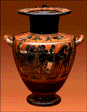
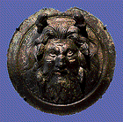
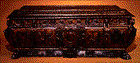
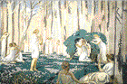
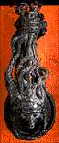

The Minneapolis Institute of Arts
Main Museum Menu
~
Educational Programs
~
Curriculum Materials
~
Teaching the Arts Catalog
Curriculum Materials: World Mythology
Introduction
~
Myth by Image
~
Myth by Culture
~
Mythological Comparisons
~
Glossary
~
Suggested Readings
~
Downloadable Resources
~
How to Order
~
Your Comments Wanted
Ancient Greek and Roman Myth

Image 7
Antimenes painter
Greece
Hydria
530-500 B.C.

Image 8
Rome
Oceanus
1st - 2nd centuries A.D.
(Empire)

Image 9
Italy
Cassone
About 1600
Image 10
Antoine-Louis Barye
France, 1796-1875
Theseus Slaying a Centaur
About 1855

Image 11
Maurice Denis
France, 1870-1943
Orpheus and Eurydice
1910

Image 12
Emile-Antoine Bourdelle
France (1861-1929)
Door Knocker in Form of Medusa
1925
Introduction
~
Myth by Image
~
Myth by Culture
~
Mythological Comparisons
~
Glossary
~
Suggested Readings
~
Downloadable Resources
~
How to Order
~
Your Comments Wanted
Main Museum Menu
~
Educational Programs
~
Curriculum Materials
~
Teaching the Arts Catalog